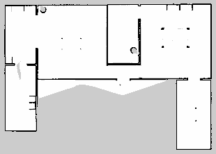
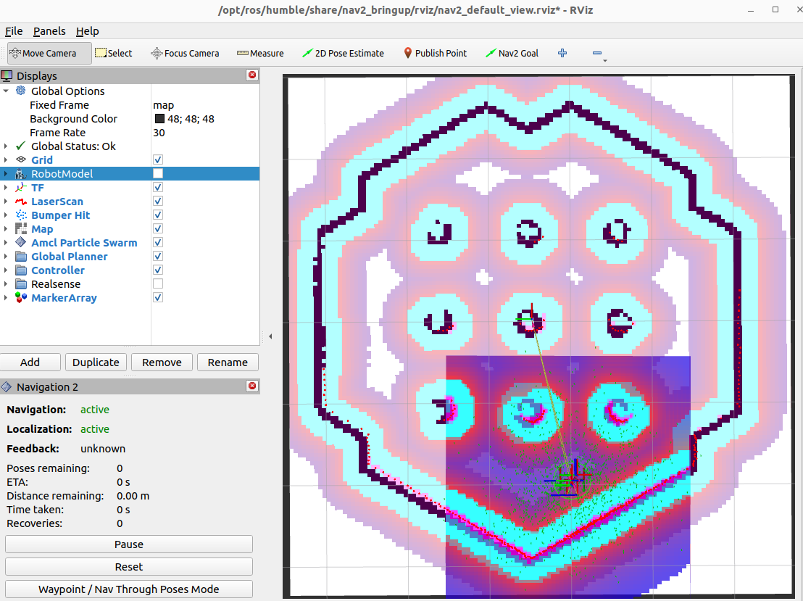
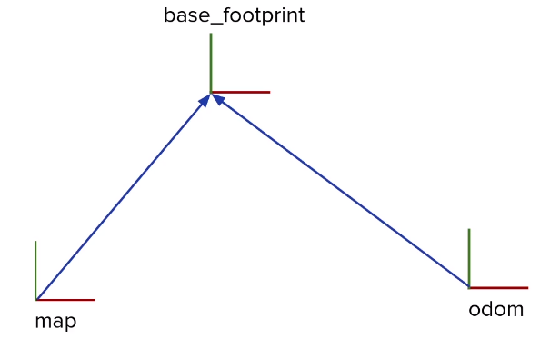
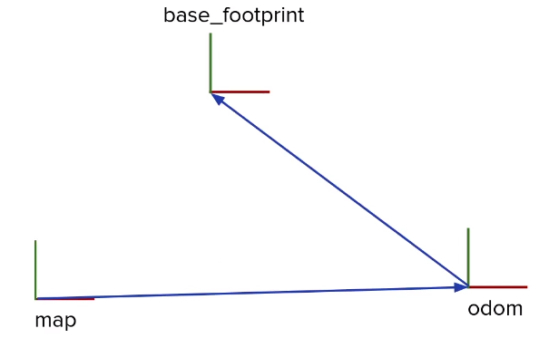

.pgm + .yaml.map → odom → base_link and who publishes each.odom → base_linkmap_saver_cli → .pgm + .yamlmap_server publishes /mapmap → odom cancels the drift| Time | Activity | Type |
|---|---|---|
| 0:00–0:10 | Warm-up: the open-loop square from Lecture 8 | Check |
| 0:10–0:35 | Drift; SLAM; occupancy grids; the particle filter simulator on the projector | Teach |
| 0:35–1:00 | Lab 1: drift_demo | Do |
| 1:00–1:40 | Lab 2: SLAM + save the map | Do |
| 1:40–1:50 | Break | |
| 1:50–2:30 | Lab 3: AMCL localisation | Do |
| 2:30–2:55 | Lab 4: wrong pose, global localisation, kidnapping | Do |
| 2:55–3:00 | Exit ticket | Check |
Teaching tip. Play "find the student": blindfold a volunteer in the classroom and let them touch only walls and doors. Their growing certainty is a particle filter. Heavy lecture for VMs: at least 4 cores and 8 GB RAM; students can pair up.
sudo apt install ros-humble-slam-toolbox ros-humble-navigation2 ros-humble-nav2-bringup ros-humble-nav2-simple-commanderWhy did your open-loop square (Lecture 8) not end where it started?
Why can't the wanderer "go to the door"?
SLAM = exploring a dark house with a torch and a notebook. As you walk, you draw the walls you see and use those same walls to work out where you are. Simultaneous Localisation And Mapping.
AMCL = a detective with a map. It keeps hundreds of guesses (particles) of where the robot might be. Guesses that explain the LiDAR scan well survive; bad ones die. After a little driving only the true position is left.




map → odom → base_link. Odometry publishes odom → base_link: smooth, but it drifts. SLAM or AMCL publishes map → odom: the small correction that cancels the drift, using the LiDAR against the map. Together they give a position that is both smooth and correct.
| Map pixel | Meaning | In the .yaml |
|---|---|---|
| ⬜ white | free | darker than free_thresh → not free |
| ⬛ black | occupied (wall) | above occupied_thresh |
| ▩ grey | unknown: not seen yet | in between |
| 1 pixel | resolution metres (0.05 = 5 cm) | origin = where pixel (0, 0) is |
In Gazebo, /odom is almost perfect. A real robot's wheels slip a few percent. This node re-computes the pose from the velocities with a small, realistic error, and prints how far it drifts from /odom.
drift_demo.py#!/usr/bin/env python3
import math
import rclpy
from rclpy.node import Node
from nav_msgs.msg import Odometry
def yaw_from_quaternion(q):
return math.atan2(2.0 * (q.w * q.z + q.x * q.y), 1.0 - 2.0 * (q.y * q.y + q.z * q.z))
class DriftDemo(Node):
def __init__(self):
super().__init__("drift_demo")
self.declare_parameter("wheel_slip", 0.03) # 3 % distance error
self.declare_parameter("gyro_bias", 0.02) # rad/s heading error
self.slip_ = self.get_parameter("wheel_slip").value
self.bias_ = self.get_parameter("gyro_bias").value
self.est_ = None # dead-reckoned (x, y, yaw)
self.true_ = None
self.last_t_ = None
self.travelled_ = 0.0
self.create_subscription(Odometry, "odom", self.callback_odom, 10)
self.create_timer(1.0, self.report)
def callback_odom(self, msg):
p = msg.pose.pose
self.true_ = (p.position.x, p.position.y, yaw_from_quaternion(p.orientation))
t = msg.header.stamp.sec + msg.header.stamp.nanosec * 1e-9
if self.est_ is None:
self.est_ = self.true_
elif self.last_t_ is not None:
dt = t - self.last_t_
v = msg.twist.twist.linear.x * (1.0 + self.slip_)
w = msg.twist.twist.angular.z + (self.bias_ if abs(msg.twist.twist.angular.z) > 0.01 or abs(v) > 0.01 else 0.0)
x, y, th = self.est_
self.est_ = (x + v * math.cos(th) * dt, y + v * math.sin(th) * dt, th + w * dt)
self.travelled_ += abs(msg.twist.twist.linear.x) * dt
self.last_t_ = t
def report(self):
if self.est_ is None:
return
err = math.hypot(self.est_[0] - self.true_[0], self.est_[1] - self.true_[1])
self.get_logger().info(f"travelled {self.travelled_:.2f} m → position error {err * 100:.1f} cm")
def main(args=None):
rclpy.init(args=args)
rclpy.spin(DriftDemo())
rclpy.shutdown()
if __name__ == "__main__":
main()ros2 launch limo_gazebosim limo_gazebo_diff.launch.py
# setup.py: "drift_demo = limo_lab.drift_demo:main",
cd ~/ros2_ws && colcon build --packages-select limo_lab --symlink-install && source ~/.bashrc
ros2 run limo_lab drift_demo --ros-args -p use_sim_time:=true
ros2 run teleop_twist_keyboard teleop_twist_keyboard[INFO] [drift_demo]: travelled 0.50 m → position error 1.8 cm [INFO] [drift_demo]: travelled 2.10 m → position error 9.6 cm [INFO] [drift_demo]: travelled 4.80 m → position error 31.2 cm
The error only grows, especially after turns. Plot error against distance in your notebook. This is why we need a map.
ros2 launch limo_gazebosim limo_gazebo_diff.launch.pyros2 launch slam_toolbox online_async_launch.py use_sim_time:=truerviz2 -d ~/ros2_ws/limo.rviz --ros-args -p use_sim_time:=trueChange Fixed Frame to map, then Add → Map, Topic /map. A grey area appears, with white where the LiDAR has seen free space and black on the walls.
ros2 run teleop_twist_keyboard teleop_twist_keyboardPress z a few times to slow down. Turn slowly and pass every wall and obstacle. Slow, smooth driving gives a sharp map; fast spinning gives a blurred, doubled map. Aim for closed black outlines and no grey gaps inside.
mkdir -p ~/maps
ros2 run nav2_map_server map_saver_cli -f ~/maps/limo_table
ls ~/maps && cat ~/maps/limo_table.yamllimo_table.pgm limo_table.yaml image: limo_table.pgm mode: trinary resolution: 0.05 ← each pixel = 5 cm origin: [-1.9, -2.4, 0] ← where pixel (0,0) is (your numbers will differ) negate: 0 occupied_thresh: 0.65 free_thresh: 0.25
The .pgm is just a greyscale picture; open it with the image viewer. Also try ros2 run tf2_ros tf2_echo map odom: that is the drift correction SLAM is publishing. Now stop everything (Ctrl+C in all terminals).
Nav2's defaults are for a bigger robot. Our table is small, so we shrink the robot radius and the "keep-away" inflation. You're applying Lecture 6 (parameters in YAML) to a real system.
mkdir -p ~/ros2_ws/params
cp $(ros2 pkg prefix nav2_bringup)/share/nav2_bringup/params/nav2_params.yaml ~/ros2_ws/params/limo_nav2.yaml
sed -i 's/robot_radius: 0.22/robot_radius: 0.16/g; s/inflation_radius: 0.55/inflation_radius: 0.25/g' ~/ros2_ws/params/limo_nav2.yaml
grep -n "robot_radius\|inflation_radius\|max_particles\|base_frame_id" ~/ros2_ws/params/limo_nav2.yamlCheck that every robot_radius now says 0.16 and every inflation_radius says 0.25. If your file used other numbers, edit them by hand. Find the amcl: section and read its parameters: min_particles, max_particles, alpha1…alpha5 (how much AMCL distrusts odometry).
ros2 launch limo_gazebosim limo_gazebo_diff.launch.pyros2 launch nav2_bringup localization_launch.py use_sim_time:=True \
map:=$HOME/maps/limo_table.yaml params_file:=$HOME/ros2_ws/params/limo_nav2.yamlrviz2 -d $(ros2 pkg prefix nav2_bringup)/share/nav2_bringup/rviz/nav2_default_view.rviz --ros-args -p use_sim_time:=trueYou see your map, but no robot yet. AMCL is waiting for a first guess.
In the RViz toolbar click 2D Pose Estimate, then click on the map where the LIMO is and drag in the direction it faces (at the start pose: the map origin, pointing along +x, red). The robot model, the laser dots and a cloud of green arrows (the particles) appear. The laser dots should sit on the black walls.
ros2 run teleop_twist_keyboard teleop_twist_keyboard
ros2 topic echo /amcl_pose --field pose.pose.positionAs the robot moves and sees walls, the particles gather into a tight group. /amcl_pose is AMCL's best estimate on the map. ros2 run tf2_ros tf2_echo map odom shows the correction it publishes.
Give a 2D Pose Estimate about 0.5 m away from the true position, facing the wrong way. The laser dots no longer match the walls. Drive a little: does AMCL recover? (With a small error it usually does; with a big one it may not.)
ros2 service call /reinitialize_global_localization std_srvs/srv/Empty "{}"The particles spread over the whole map, exactly like pressing "↺ Reset" in the simulator above. Drive around slowly: in a small, fairly symmetric world it may take a while, or settle on a wrong but similar-looking place. Why?
In Gazebo, select the LIMO and move it with the translate tool (T) to another place. Odometry didn't see that move. What does RViz show? Fix it with a new 2D Pose Estimate. (The simulator's "🧲 Kidnap" button shows why AMCL adds a few random particles.)
Another way to reduce drift without a map is to fuse several sensors: wheel odometry (good at distance), the IMU gyro (good at rotation), and laser scan matching. The standard ROS 2 package is robot_localization, an Extended Kalman Filter that publishes a better odom → base_link. A minimal configuration looks like this:
ekf_filter_node:
ros__parameters:
use_sim_time: true
frequency: 30.0
two_d_mode: true
odom_frame: odom
base_link_frame: base_link
world_frame: odom
odom0: /odom
odom0_config: [false, false, false, false, false, false,
true, false, false, false, false, false,
false, false, false] # use vx from the wheels
imu0: /imu
imu0_config: [false, false, false, false, false, false,
false, false, false, false, false, true,
false, false, false] # use yaw rate from the gyroThe extended notes on odometry, EKF and AMCL walk through the full experiment and AMCL tuning with rqt_reconfigure.
Map the empty table world as well, save it as ~/maps/limo_empty, and compare the two maps. Start Gazebo with:
ros2 launch limo_gazebosim limo_gazebo_diff.launch.py \
world:=$(ros2 pkg prefix limo_gazebosim)/share/limo_gazebosim/worlds/simulation_table.worldWhich world is easier for AMCL to localise in, and why? (Hint: think about symmetry and landmarks.)
Repeat Lab 4 step 3 five times with different distances. Record whether AMCL recovers by itself after 30 s of driving.
| Moved by | Recovered alone? | Time |
|---|---|---|
| 0.2 m | ||
| 0.5 m | ||
| 1.0 m | ||
| 1.0 m + 90° | ||
| global reinit |
/amcl_pose and /odom every second while you drive.Which transform does AMCL publish?
odom → base_link, so AMCL publishes the correction above it.A map has resolution: 0.05. A wall is 40 pixels long. How long is it?
Why do AMCL's particles gather at the true position over time?
When should you save the SLAM map?
/map topic.Why does odometry drift?
| You see… | Why | Fix |
|---|---|---|
| RViz: "Frame [map] does not exist" | SLAM / map_server not running, or no 2D Pose Estimate yet. | Check Terminal 2 for errors; set the initial pose. |
| Map looks doubled / smeared | You drove or turned too fast during SLAM. | Start again; drive slowly (press z). |
| map_saver: "Failed to spin map subscription" | No /map topic (SLAM already stopped). | Keep SLAM running while saving. |
| Laser dots don't match the walls | Wrong initial pose. | Redo 2D Pose Estimate (position and direction). |
| "Timed out waiting for transform" | Sim time mismatch. | Every node and RViz needs use_sim_time:=true. |
What do the letters in SLAM stand for?
SLAM vs AMCL: which one needs a map beforehand?
~/maps/limo_table.yaml and ~/ros2_ws/params/limo_nav2.yaml: Lecture 13 uses both.